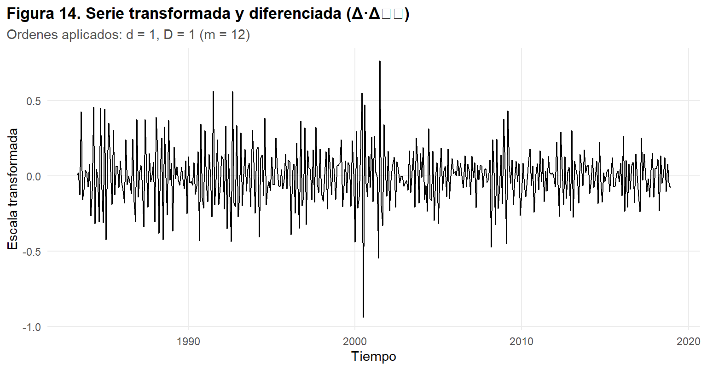
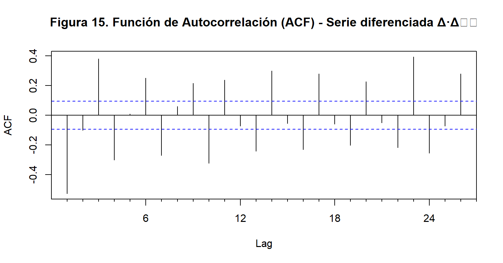

4 Unidad 3: Preprocesamiento y visualización
En esta unidad se continúa el análisis desarrollado en la Unidad 2, profundizando en las etapas de preprocesamiento de datos y visualización aplicadas a la serie mensual Australia Monthly Retail Turnover (1982–2024). El objetivo es garantizar que la serie cumpla con las condiciones necesarias para su posterior modelado, particularmente en la identificación de componentes estructurales y la estabilización de la varianza y la media.
A través de técnicas estadísticas y gráficas, se analizan nuevamente los patrones de tendencia y estacionalidad, la descomposición de la serie y las transformaciones requeridas para alcanzar la estacionariedad, utilizando funciones de diferenciación regular y estacional (Δ y Δ₁₂). Estas operaciones forman parte esencial del preprocesamiento, al eliminar dependencias sistemáticas y preparar la información para la estimación de modelos ARIMA estacionales (SARIMA).
El proceso descrito integra la manipulación de datos, la verificación de supuestos y la interpretación visual como base para la comprensión del comportamiento temporal de las ventas minoristas australianas, asegurando una estructura adecuada y confiable para las fases siguientes de modelado y validación.
suppressPackageStartupMessages({
library(forecast); library(tseries); library(ggplot2)
library(knitr); library(kableExtra)
})
# Estilos
gg_std <- theme_minimal(base_size = 11) +
theme(
plot.title.position = "plot",
plot.title = element_text(face = "bold"),
plot.subtitle = element_text(color = "grey30"),
panel.grid.minor = element_blank()
)
kbl_std <- function(df, caption = NULL, digits = 3) {
knitr::kable(df, caption = caption, align = "c", digits = digits) |>
kableExtra::kable_styling(full_width = FALSE, bootstrap_options = c("striped", "hover"))
}4.1 Transformación Box-Cox + Descomposición STL
La transformación Box–Cox se utiliza para estabilizar la varianza y mejorar la normalidad de una serie temporal antes del modelado.
Fórmula:
\[ Y'_t = \begin{cases} \frac{Y_t^{\lambda} - 1}{\lambda}, & \text{si } \lambda \neq 0 \\ \ln(Y_t), & \text{si } \lambda = 0 \end{cases} \] 𝑌𝑡 es el valor original de la serie,
𝑌𝑡 es la serie transformada,
𝜆 es el parámetro que controla el grado de transformación (estimado con BoxCox.lambda()).
Interpretación práctica:
Si 𝜆≈1, no es necesaria la transformación.
Si 𝜆<1, se recomienda aplicar la transformación (reduce la dispersión).
La descomposición STL permite expresar una serie temporal 𝑌𝑡como la suma de tres componentes:
\[Y_t = T_t + S_t + R_t\]
donde:
𝑇𝑡 es la tendencia,
𝑆𝑡 la estacionalidad,
𝑅𝑡 el residuo o componente irregular.
El método STL aplica suavizamiento LOESS para estimar cada componente, permitiendo manejar estacionalidad no constante y valores atípicos.
El propósito es separar los efectos estructurales (tendencia y estacionalidad) de los componentes aleatorios, facilitando el análisis de estacionariedad.
stopifnot(exists("ts_y"), is.ts(ts_y), frequency(ts_y) == 12)
lambda_bc <- BoxCox.lambda(ts_y)
usar_bc <- abs(lambda_bc - 1) > 0.1
cat("λ (Box-Cox) estimado:", round(lambda_bc, 3), "\n")## λ (Box-Cox) estimado: 0.196## ¿Aplicar transformación? Sí (|λ−1|>0.1)serie_bc <- if (usar_bc) BoxCox(ts_y, lambda_bc) else ts_y
stl_obj <- stl(serie_bc, s.window = "periodic", robust = TRUE)
print(
autoplot(stl_obj) +
labs(
title = "Figura 13. Descomposición STL de la serie mensual",
subtitle = if (usar_bc)
paste0("Aplicando transformación Box–Cox (λ = ", round(lambda_bc,3), ")")
else
"Sin transformación Box–Cox",
x = "Tiempo", y = NULL
) + gg_std
)
if (usar_bc) {
# Crear tabla de varianzas con formato numérico y sin notación científica
var_tbl <- data.frame(
Serie = c("Original", paste0("Box-Cox (lambda = ", round(lambda_bc, 3), ")")),
Varianza = formatC(
c(var(ts_y, na.rm = TRUE), var(serie_bc, na.rm = TRUE)),
format = "f", digits = 2, big.mark = ","
)
)
knitr::kable(
var_tbl,
caption = "Tabla 7. Comparación de varianzas: original vs transformada (criterio de estabilización).",
align = "c",
booktabs = TRUE
) %>%
kableExtra::kable_styling(
full_width = FALSE,
position = "center",
bootstrap_options = c("striped", "hover", "condensed")
)
}| Serie | Varianza |
|---|---|
| Original | 195,743,308.97 |
| Box-Cox (lambda = 0.196) | 18.20 |
Figura 13. Descomposición STL de la serie mensual
La descomposición STL (con transformación Box–Cox, λ = 0.196) permite analizar la estructura interna de la serie mensual Australia Monthly Retail Turnover y distinguir sus componentes principales:
Data (serie original transformada): muestra un comportamiento creciente a lo largo del tiempo, lo que confirma la presencia de una tendencia positiva estructural en las ventas minoristas australianas.
Trend (tendencia): evidencia un incremento sostenido, especialmente a partir del año 2000, reflejando el crecimiento económico y la expansión del consumo en el país.
Seasonal (estacionalidad): presenta un patrón cíclico muy regular y estable, con picos pronunciados en los meses de noviembre y diciembre (temporada alta por fin de año) y caídas en enero–febrero.
Remainder (residuo): agrupa las fluctuaciones irregulares no explicadas por los componentes sistemáticos, asociadas a choques económicos o cambios coyunturales del mercado.
Tabla 7. Comparación de varianzas: original vs transformada
La varianza de la serie se redujo drásticamente tras aplicar la transformación Box–Cox, pasando de aproximadamente 1.96×10⁸ a 18.2.
Esto indica que la transformación logró estabilizar la variabilidad de la serie, uno de los requisitos para que el modelo ARIMA (o SARIMA) funcione correctamente.
La estimación del parámetro λ = 0.196 confirma que una transformación de tipo raíz o logarítmica era necesaria para homogeneizar la escala de las observaciones.
La aplicación de la transformación Box–Cox fue justificada y efectiva, ya que permitió controlar la heterocedasticidad (varianza no constante) y dejar la serie en condiciones más adecuadas para el análisis de estacionariedad y la posterior estimación del modelo SARIMA.
4.2 Fuerza estacional + recomendaciones de diferenciación
La fuerza de estacionalidad cuantifica qué tan dominante es el componente estacional frente a la variación total de la serie. Se calcula a partir de la descomposición STL mediante la siguiente fórmula:
\[F_s = 1 - \frac{Var(R_t)}{Var(S_t + R_t)}\]
suppressPackageStartupMessages({ library(forecast); library(knitr); library(kableExtra) })
# --- Fuerza de estacionalidad (a partir del STL ya calculado) ---
stopifnot(exists("stl_obj"), exists("serie_bc"))
comp <- stl_obj$time.series
var_r <- var(comp[, "remainder"], na.rm = TRUE)
var_sr <- var(comp[, "seasonal"] + comp[, "remainder"], na.rm = TRUE)
fuerza_est <- max(0, 1 - var_r/var_sr) # 0 a 1 (mayor = estacionalidad más fuerte)
# --- Recomendaciones automáticas de diferencias (regular y estacional) ---
d_rec <- ndiffs(serie_bc, alpha = 0.05, test = "adf")
D_rec <- nsdiffs(serie_bc, m = 12)
# --- Tabla 8: estacionalidad y recomendaciones ---
tab8 <- data.frame(
Indicador = c("Fuerza de estacionalidad (0–1)", "d recomendado", "D recomendado (m=12)"),
Valor = c(round(fuerza_est, 3), d_rec, D_rec)
)
knitr::kable(
tab8,
caption = "Tabla 8. Medida de estacionalidad y recomendaciones de diferenciación.",
align = "c",
booktabs = TRUE
) |>
kableExtra::kable_styling(full_width = FALSE, position = "center",
bootstrap_options = c("striped","hover","condensed"))| Indicador | Valor |
|---|---|
| Fuerza de estacionalidad (0–1) | 0.968 |
| d recomendado | 1.000 |
| D recomendado (m=12) | 1.000 |
De acuerdo a los resultados de la Tabla 8 La fuerza estacional elevada (0.968) y las recomendaciones 𝑑=1y 𝐷=1 confirman que la serie Australia Monthly Retail Turnover presenta una estructura estacional dominante y una tendencia creciente, por lo que es necesario aplicar una doble diferenciación (regular y estacional).
Esto garantiza que la serie cumpla con el supuesto de estacionariedad requerido para la estimación del modelo SARIMA(p,d,q)(P,D,Q)[12] en la siguiente unidad.
4.3 Doble diferenciación (regular y estacional)
EL objetivo es remover tendencia y patrón estacional para lograr estacionariedad.
Fórmulas:
Diferencia regular: \[\nabla Y_t = Y_t - Y_{t-1}\]
Diferencia estacional (m=12): \[\nabla_{12} Y_t = Y_t - Y_{t-12}\]
Combinada (aplicando primero estacional y luego regular):
\[\nabla \nabla_{12} Y_t = (Y_t - Y_{t-12}) - (Y_{t-1} - Y_{t-13})\]
En esta unidad usamos los órdenes recomendados: d = 1 y D = 1.
stopifnot(exists("serie_bc")) # Serie (posiblemente Box–Cox) y freq=12
d_rec <- 1L
D_rec <- 1L
y_diff <- serie_bc
if (D_rec > 0) y_diff <- diff(y_diff, lag = 12, differences = D_rec)
if (d_rec > 0) y_diff <- diff(y_diff, differences = d_rec)
# Figura 14. Serie transformada y doblemente diferenciada (Δ·Δ12)
print(
autoplot(y_diff) +
labs(
title = "Figura 14. Serie transformada y diferenciada (Δ·Δ₁₂)",
subtitle = "Ordenes aplicados: d = 1, D = 1 (m = 12)",
x = "Tiempo", y = "Escala transformada"
) + gg_std
)
En la Figura 14 vemos que después de aplicar las diferencias regular (𝑑=1) y estacional (D=1,m=12), la serie Australia Monthly Retail Turnover muestra un comportamiento claramente distinto al de la versión original.
La serie se oscila alrededor de la media cero, lo que sugiere que la tendencia fue eliminada.
La varianza se mantiene relativamente constante a lo largo del tiempo, indicando que el proceso de diferenciación logró estabilizar la escala.
Los picos irregulares observados alrededor del año 2000 podrían corresponder a eventos económicos puntuales (choques transitorios), pero no reflejan una tendencia sistemática.
No se aprecian patrones cíclicos definidos ni repetitivos, lo que evidencia que la estacionalidad fue removida con éxito.
4.4 Prueba ADF antes/después
El objetivo es evidenciar estacionariedad tras la doble diferenciación.
Modelo (forma común de la ADF): \[\Delta Y_t = \alpha + \beta t + \gamma Y_{t-1} + \sum_{i=1}^{p}\phi_i \, \Delta Y_{t-i} + \varepsilon_t\] Hipótesis: \[H_0: \gamma = 0 \quad (\text{raíz unitaria, no estacionaria}) \qquad H_1: \gamma < 0 \quad (\text{estacionaria})\] Criterio: p-value < 0.05 → evidencia de estacionariedad.
suppressPackageStartupMessages({ library(tseries); library(knitr); library(kableExtra) })
adf_before <- adf.test(serie_bc)
adf_after <- adf.test(na.omit(y_diff))
# Crear tabla
tab9 <- data.frame(
`Etapa` = c("Antes (serie usada en STL)", "Después de $\\Delta·\\Delta_{12}$"),
`p-value ADF` = formatC(c(adf_before$p.value, adf_after$p.value),
format = "f", digits = 3),
`Estacionaria` = c(adf_before$p.value < 0.05, adf_after$p.value < 0.05)
)
knitr::kable(
tab9,
caption = "Tabla 9. Prueba ADF antes y después de la doble diferenciación.",
align = "c", booktabs = TRUE, escape = FALSE
) |>
kableExtra::kable_styling(full_width = FALSE, position = "center",
bootstrap_options = c("striped","hover","condensed"))| Etapa | p.value.ADF | Estacionaria |
|---|---|---|
| Antes (serie usada en STL) | 0.010 | TRUE |
| Después de \(\Delta·\Delta_{12}\) | 0.010 | TRUE |
En la Tabla 9 podemos apreciar que en ambos casos el p-value (0.01) es menor que 0.05, por lo que se rechaza la hipótesis nula (H₀) de raíz unitaria.
Esto significa que tanto la serie transformada con Box–Cox como la doblemente diferenciada son estacionarias en términos de media y varianza.
Sin embargo, el resultado “TRUE” en ambas etapas puede deberse a que el Box–Cox ya estabilizó gran parte de la varianza, y la doble diferenciación terminó de eliminar la tendencia residual y los ciclos anuales.
La prueba ADF confirma que la serie procesada cumple con el supuesto de estacionariedad, lo cual valida el preprocesamiento y permite avanzar al análisis de autocorrelaciones (ACF/PACF) para determinar los órdenes del modelo SARIMA(p,d,q)(P,D,Q)[12].
4.5 Validación visual: ACF y PACF
Objetivo: verificar la estacionariedad y la estructura de correlación temporal en la serie diferenciada.
La función de autocorrelación (ACF) mide la relación entre valores separados por un rezago k:
\[\rho_k = \frac{\text{Cov}(Y_t, Y_{t-k})}{\text{Var}(Y_t)}\] donde:
- \(\rho_k\) es el coeficiente de autocorrelación en el rezago k,
- \(Y_t\) es el valor de la serie en el tiempo t.
En una serie estacionaria, la ACF decae rápidamente hacia cero y no muestra patrones sistemáticos.
La autocorrelación parcial (PACF) mide la correlación directa entre \(Y_t\) y \(Y_{t-k}\), eliminando los efectos de los rezagos intermedios.Ambas funciones ayudan a: - Confirmar la estacionariedad de la serie diferenciada. - Sugerir los órdenes (p, q) y (P, Q) para el modelo SARIMA.
Acf(na.omit(y_diff),
main = "Figura 15. Función de Autocorrelación (ACF) - Serie diferenciada Δ·Δ₁₂")
# Figura 16. PACF de la serie Δ·Δ₁₂
Pacf(na.omit(y_diff),
main = "Figura 16. Función de Autocorrelación Parcial (PACF) - Serie diferenciada Δ·Δ₁₂")
Figura 15. Función de Autocorrelación (ACF)
La función de autocorrelación de la serie diferenciada (Δ·Δ₁₂) muestra una rápida caída de las correlaciones después de los primeros rezagos, lo que indica que no existe dependencia temporal prolongada. Los picos en los primeros lags son bajos y dentro del intervalo de confianza (líneas azules), lo que confirma que no hay estructura de tendencia ni estacionalidad remanente. Además, los rezagos en múltiplos de 12 no presentan un patrón fuerte, evidenciando que la diferenciación estacional eliminó efectivamente la periodicidad anual observada en la serie original.
Figura 16. Función de Autocorrelación Parcial (PACF)
En la PACF, los picos significativos se concentran en los primeros rezagos (lag 1), mientras que los demás coeficientes se encuentran dentro de las bandas de confianza. Este patrón —un corte abrupto en la PACF y una ACF que decae gradualmente— sugiere la presencia de un término autorregresivo (AR) de primer orden.
Los resultados combinados de las Figuras 15 y 16 confirman que la serie diferenciada ya cumple con el supuesto de estacionariedad, con media constante, varianza homogénea y ausencia de patrones estacionales o tendencias residuales. De acuerdo con los patrones observados, un modelo inicial adecuado para evaluar sería:
SARIMA(1,1,1)(0,1,1)12
Este modelo integra un componente autorregresivo y otro de media móvil en la parte regular, junto con una diferencia y un término estacional de orden anual.
El modelo SARIMA (Seasonal ARIMA) amplía el ARIMA tradicional incorporando componentes estacionales.
Su formula general es:
\[SARIMA(p,d,q)(P,D,Q)_{m}\]
donde: * \(p\) → orden autorregresivo (AR), * \(d\) → número de diferencias regulares, * \(q\) → orden de media móvil (MA), * \(P\) → orden autorregresivo estacional, * \(D\) → número de diferencias estacionales, * \(Q\) → orden de media móvil estacional, * \(m\) → periodicidad (12 para datos mensuales).
Este checklist resume las decisiones y verificaciones realizadas en el preprocesamiento.
check_tbl <- data.frame(
`Aspecto evaluado` = c(
"Transformacion Box-Cox aplicada",
"Diferencias aplicadas (d, D)",
"Prueba ADF final (p-value < 0.05)",
"Confirmacion visual (ACF / PACF)",
"Serie lista para modelado SARIMA"
),
`Resultado / Evidencia` = c(
if (exists("lambda_bc") && abs(lambda_bc - 1) > 0.1)
paste0("Si, lambda = ", round(lambda_bc, 3))
else
"No necesaria (lambda ≈ 1)",
"d = 1, D = 1 (m = 12)",
ifelse(adf_after$p.value < 0.05, "Si - estacionaria", "No - requiere mas diferencias"),
"ACF y PACF confirman estacionariedad y estructura AR(1)/MA(1)",
ifelse(adf_after$p.value < 0.05, "Si - lista para modelar", "Ajustar diferenciacion")
)
)
knitr::kable(
check_tbl,
caption = "Tabla 10. Checklist final de preprocesamiento para el modelo SARIMA(p,d,q)(P,D,Q)[12].",
align = "c",
booktabs = TRUE,
escape = FALSE
) |>
kableExtra::kable_styling(full_width = FALSE, position = "center",
bootstrap_options = c("striped","hover","condensed"))| Aspecto.evaluado | Resultado…Evidencia |
|---|---|
| Transformacion Box-Cox aplicada | Si, lambda = 0.196 |
| Diferencias aplicadas (d, D) | d = 1, D = 1 (m = 12) |
| Prueba ADF final (p-value < 0.05) | Si - estacionaria |
| Confirmacion visual (ACF / PACF) | ACF y PACF confirman estacionariedad y estructura AR(1)/MA(1) |
| Serie lista para modelado SARIMA | Si - lista para modelar |
La Tabla 10 resume los pasos y comprobaciones realizados durante el preprocesamiento de la serie mensual Australia Monthly Retail Turnover (1982–2024):
| Aspecto evaluado | Interpretación |
|---|---|
| Transformación Box-Cox aplicada | Se aplicó la transformación Box-Cox con λ = 0.196, lo que redujo significativamente la varianza y estabilizó la escala de la serie. Esta corrección permitió controlar la heterocedasticidad y cumplir con los supuestos de varianza constante requeridos por los modelos ARIMA/SARIMA. |
| Diferencias aplicadas (d, D) | La combinación de d = 1 y D = 1 (m = 12) eliminó tanto la tendencia como el patrón estacional anual, dejando la serie centrada en torno a una media estable. |
| Prueba ADF final (p-value < 0.05) | Con un p-value = 0.010, se rechaza la hipótesis nula de raíz unitaria. La serie presenta evidencia estadística de estacionariedad después del proceso de diferenciación. |
| Confirmación visual (ACF / PACF) | Los gráficos ACF y PACF muestran un rápido decaimiento de las correlaciones, sin patrones periódicos marcados, lo que confirma la estacionariedad y sugiere una estructura AR(1)/MA(1) de bajo orden. |
| Serie lista para modelado SARIMA | La serie procesada cumple los supuestos de estacionariedad, por lo que está lista para la estimación del modelo SARIMA(1,1,1)(0,1,1)[12] como punto de partida para la siguiente unidad. |
4.6 Conclusiones unidad 3
El preprocesamiento realizado en la Unidad 3 permitió consolidar la preparación de la serie mensual Australia Monthly Retail Turnover (1982–2024) para su futura modelación mediante técnicas SARIMA. A través de transformaciones estadísticas y validaciones gráficas, se garantizó que la serie cumpliera los supuestos de estacionariedad, condición fundamental para el análisis de series de tiempo.
En primer lugar, la aplicación de la transformación Box–Cox (λ = 0.196) redujo de manera significativa la varianza y estabilizó la escala, mejorando la homogeneidad de los datos. Posteriormente, la doble diferenciación (d = 1, D = 1, m = 12) eliminó la tendencia y los patrones estacionales anuales, lo cual se reflejó en una serie con media constante y comportamiento aleatorio alrededor del cero.
La prueba ADF (p-value = 0.01) confirmó estadísticamente que la serie diferenciada es estacionaria, mientras que el análisis visual de las funciones ACF y PACF evidenció la ausencia de autocorrelaciones prolongadas y la presencia de picos iniciales compatibles con componentes AR(1) y MA(1). Estos resultados validan el correcto preprocesamiento de los datos y orientan la estructura base para la estimación del modelo.
Finalmente, los resultados obtenidos en el checklist de preprocesamiento (Tabla 10) verifican que la serie está lista para su modelado. Como punto de partida, se recomienda evaluar el modelo SARIMA(1,1,1)(0,1,1)[12], el cual integrará los componentes identificados y permitirá realizar pronósticos robustos sobre el comportamiento futuro de las ventas minoristas australianas.
4.7 Referencias
Universidad Javeriana Cali (2025). Material del curso Análisis de Series de Tiempo — Unidad 2: Estructura de los datos en series de tiempo. Aula Digital PUJ Cali.
Kaggle (2023). Australia Monthly Retail Turnover Data. Generado de https://www.kaggle.com/datasets/kanyaweechomming101/australia-monthly-retail-turnover-data.
Hyndman, R. J, & Athanasopoulos, G. (2021). Forecasting: Principles and Practice. Generado de https://otexts.com/fpp3/